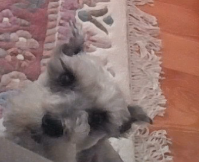

Dog
(Animal)
The dog or domestic dog is a domesticated descendant of the wolf which is characterized by an upturning tail. The dog is derived from an ancient, extinct wolf, and the modern wolf is the dog's nearest living relative.